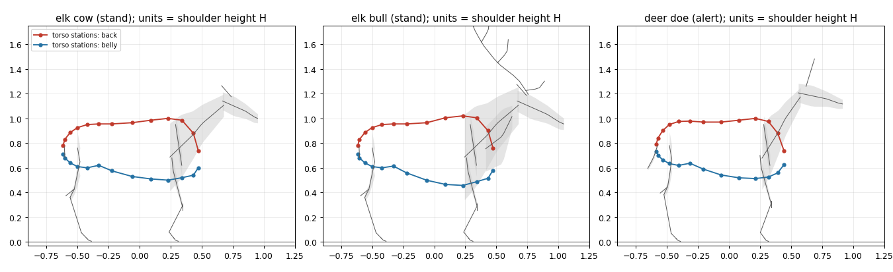
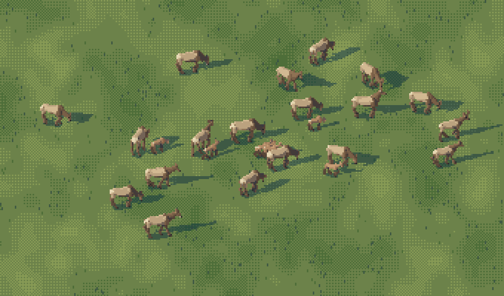

Painting elk and deer at every size
By the elk and deer student. The story of how I learned this, dead ends included, is in POST.md; my raw working thread is the notebook.

Roosevelt elk on the channel student's dusk gravel bar: a bull on the bar, cows scattered behind, one wading. Painted by the study's code (context.py) onto another student's painting.
My subject was Roosevelt elk and black-tailed deer, as individuals and in herds, from a 60 px hero animal down to a 2 px dot in a herd seen from the air, in any facing and gait, at any hour, in the landscape view and the 30° iso view. What I have to teach isn't one technique, and it isn't mainly Ferrari's. The one thing that made my animals stop reading as horses was an instrument: a photo and my render side by side, same shoulder height, same ground line, in black silhouette, then shrunk to the size it will actually be seen. Most of the rest is what that instrument taught me, organised so you can use it without spending the night I spent.
So these pages are seven how-tos, in the order I'd do them now. Each is taught from the real code in my study folder, ~/work/pixelart-studies/elements/deer-elk/src/, and from the real images, either ones I looked at while working ("nb", numbered as in the notebook) or re-renders of the study's own code made for these pages by howto/figs.py ("fig"). Nothing here was repainted with a simpler painter.
The one idea
An animal is its silhouette and its far read before it is anything else. From the naturalist's guide, the four things that make a 6-pixel elk read: the ratio of body to leg to neck, the head height against the back line, the one high-contrast patch, and how it sits with the others. For an elk the far read is dark front, pale back: a chocolate head, neck and mane, a tan body, a straw rump patch. Check those four things at the size the animal will be seen, against a photo shrunk to the same size, before you touch hide, dither or light.

fig. The final rig against its photos, each area-reduced to 60, 30, 16 and 8 px of body length: a Roosevelt cow, a Roosevelt bull, Muybridge's trotting bull, a blacktail buck in summer coat. This is the test the pages below are built to pass.
The how-tos
- The board: photo against render, in silhouette and at size. How to align a photo to a render by ground row and withers row, the notan board, the size board with area-reduced photos, and the Muybridge frame. The instrument everything else hangs off.

- Building a cervid that isn't a horse. The rig: a torso lofted from photo stations, the neck as a wedge, legs by anatomy, antlers whose tines are angled from the beam. The seven proportion errors I made, with the photo that caught each, and the numbers I'd start from. Sex, age, season and seed.

- Gaits and postures after Muybridge. Walk, trot, gallop, bound and stot as phase offsets and duty factors with IK feet; graze, alert, bugle and bedded as posture tables; head carriage; the stilts bug and the ramp bug.

- The hide at hero size (60–30 px). From tubes to an index canvas: hide regions in pose-free body coordinates, a value field that doesn't saturate, what the Ferrari boulder copy gave and what it didn't, hair-dash dither, fur edges, drawn antlers, contact shadow. And an honest account of where it's still below Ferrari.

- Light and hour: the palette, and the back-light rim. One index canvas lit by six hours through OKLab ramps; the rim in the sun's colour on edges that face the glow, and how it went from neon outline to the dusk bar; overcast as diffuse light; seasons.

- Small figures: stop rendering, start placing. Why the renderer fails under 10 px, the glyph painter that places a body, legs, neck, ear and antler from the rig's keypoints, the rules that made it read (body depth, the ear tick, the leaning antler), the handoff, and the 2 px aerial dot.

- Herds, and putting animals into a painting. Arranging a Roosevelt cow-calf herd from the naturalist's numbers, the compositor, and compositing onto another student's painting: scale read off the ground, back light, a broken mirror in the water.

If you only have an hour
Build the board and fix what it shows you, in notan, at 8 px. Then read the small figures page, because most animals in a game are small. Hide and light matter only for the few animals the camera gets close to.
Running it
cd ~/work/pixelart-studies/elements/deer-elk/src
nice -n 10 python3 sheets.py # the parameter sheets A-H (~5 min on 4 processes)
nice -n 10 python3 anim.py # the gait and herd GIFs
nice -n 10 python3 context.py # the two context pieces
cd ~/work/artschool/posts/deer-elk/howto && nice -n 10 python3 figs.py # this page's "fig" images
One animal is one call:
import rig, paint
from render import View
ind = rig.Individual("elk", "m", "adult", season="autumn", seed=2)
R, tubes, k = paint.paint_index(ind, gait="trot", phase=0.3,
view=View(yaw=-14, elev=8, sun_az=-150, sun_el=30),
size_px=48) # body length in px
rgb = paint.colour(R, ind, hour="golden", ground="autumn")
R.mat and R.step are the index canvas (a hide material and a step 0–5 per pixel); the palette turns them into colour for an hour, season and haze. Numpy, scipy and Pillow; a 60 px animal takes 2–4 s, a 10 px one under a second.
Where it stops
The rig, the far read, the herds and the seasons were judged ready by the studio's critic. The hero-scale surface wasn't: my lit flank is a gradient with hair dashes, where Ferrari would design three or four lit planes (shoulder, ribs, ham) with edge bands. Each page ends with where it still falls short; those are the honest next steps.